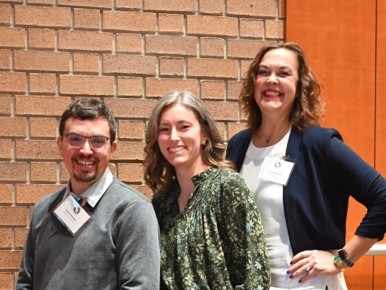
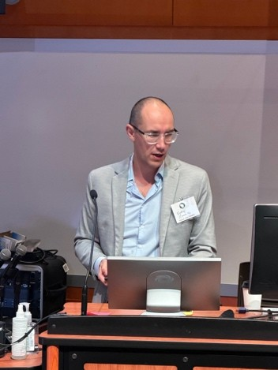
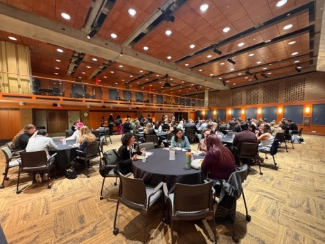
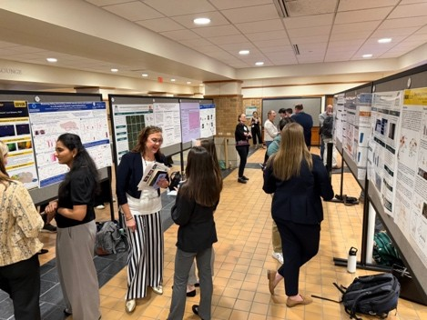

| Home | Registration | Program | Directions | Flyer |
More than 100 researchers, clinicians, and trainees from 19 institutions made the Second Annual Wisconsin Pain Research Day a great success. We look forward to seeing you next year! Read the recap of the day below.

On October 9th, 2026, over 100 researchers, clinicians, and trainees from 19 institutions across the United States gathered at the Medical College of Wisconsin (MCW) in Milwaukee for the Second Annual Wisconsin Pain Research Day. MCW faculty members Cheryl Stucky, PhD, Tayler Sheahan, PhD, and Aaron Mickle, PhD, organized the day, which brought together scientific discussion ranging from intracellular signaling to bedside care.

Geoffroy Laumet, PhD, Red Cedar Distinguished Professor at Michigan State University, opened the day as keynote speaker. Dr. Laumet spoke on his lab's work implicating immune disruptions within the brain's lymphatic drainage in migraine-like behaviors, pointing to a novel mechanism underlying migraine. Next, attendees presented their work in oral sessions, covering topics ranging from mRNA translational control as an analgesic strategy (Zachary Campbell, PhD) and GPCR tuning for treating pain (Lauren Slosky, PhD) to lifestyle medicine and metabolic therapeutics for chronic pain (Burel Goodin, PhD). The day closed with a poster session, where more than 45 trainees and faculty shared their work.


As a trainee, what I appreciated most was the organizing committee's commitment to trainees and their professional growth. Of attendees, 49% were trainees (graduate students, postdoctoral fellows, and residents), and trainees delivered 58% of talks. Over lunch, trainees and faculty sat together at topic tables on building professional networks, developing leadership and mentorship skills, and making research more translational. I particularly enjoyed interacting with faculty members from various institutions and getting advice on navigating graduate school and next steps in my career!
The goal that brought everyone together is clear: to understand chronic, debilitating pain and use that knowledge to improve people's lives. With attendees from 19 institutions and trainees leading much of the program, this year's event reinforced that MCW and Wisconsin are a hub for pain research and cross-disciplinary collaboration.
Thank you to everyone who joined, and we look forward to seeing you next year!
The Advancing a Healthier Wisconsin Endowment, the MCW Neuroscience Research Center, the MCW Wisconsin Institute of Neuroscience, and the MCW Departments of Cell Biology, Neurobiology & Anatomy, Anesthesiology, Medicine, Neurology, Neurosurgery, Physiology, and Pharmacology & Toxicology generously supported this event.
Save the Date, October 9th 2026 for the annual Wisconsin Pain Research Day at the Medical College of Wisconsin for a dynamic one-day conference dedicated to advancing pain research, presented by the Wisconsin Institute of NeuroScience. This event brings together experts from basic science, translational research, and clinical studies to explore the latest breakthroughs in understanding and treating pain. Featuring a distinguished plenary speaker, Geoffroy Laumet, PhD, as well as opportunities for trainees to present their research, this conference fosters collaboration, innovation, and meaningful discussions among scientists, clinicians, and emerging scholars. Whether you're an established investigator or an early-career researcher, this is a unique opportunity to connect with peers and contribute to the future of pain science.
The 2026 Wisconsin Pain Research Day organizing committee:
Cheryl Stucky - Marvin Wagner Endowed Professor, Director of the WINS Pain Pillar, and Director, Pain Division, Neuroscience Research Center
Aaron Mickle - Associate Professor in the Department of Physiology, Neurosurgery and Urology
Tayler Sheahan - Assistant Professor in the Department of Cell Biology, Neurobiology and Anatomy
Jonathan Enders - Postdoctoral Researcher in the Department of Cell Biology, Neurobiology and Anatomy
Gabbie Robilotto - Graduate Student in the Department of Physiology
Bradey Stuart - MSTP Student in the Department of Cell Biology, Neurobiology and Anatomy
Hannah Anderson - Graduate Student in the Department of Physiology
Advancing a Healthier Wisconsin, MCW Wisconsin Institute of Neuroscience (WINS) and the Neuroscience Research Center (NRC), and MCW Departments: Cell Biology, Neurobiology & Anatomy, Anesthesiology, Medicine, Neurology, Neurosurgery, Pharmacology & Toxicology, and Physiology!